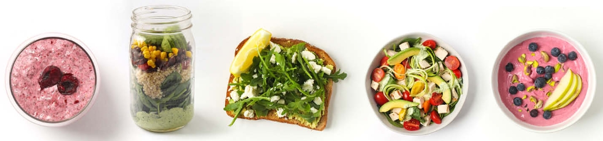
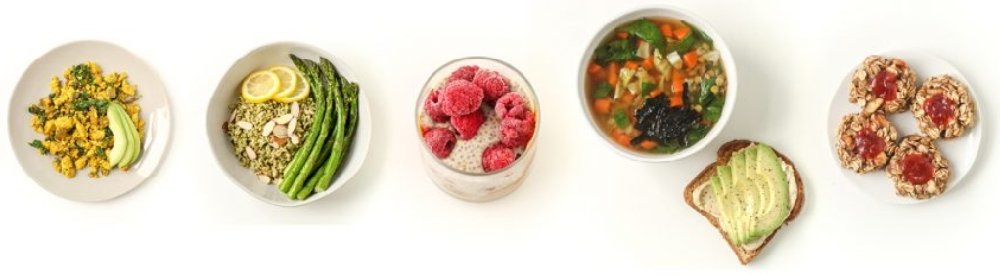

KÉSZÜLJ FÖL. NE LÉGY ÁLDOZAT.
A koronavírus árnyékában
Tájékoztató oldal
 terjedés cseppfertőzéssel
terjedés cseppfertőzéssel légutakban okozza a fő problémát
légutakban okozza a fő problémát kezdeti tünetek egybeesnek az influenza és egyéb légúti fertőzés tüneteivel
kezdeti tünetek egybeesnek az influenza és egyéb légúti fertőzés tüneteivel a fertőzést követően:
a fertőzést követően:
- 4-5. nap: hirtelen felszökő magas láz, fejfájás, száraz köhögés
- 5-6. nap: a száraz köhögést felváltja a hurutos, fullasztó érzéssel járó köhögés;
a test hőháztartása felborul, a magas láz nem akar elmúlni, és kialakul a tüdőgyulladás
 az esetek 16%-ában a tünetek olyan súlyossá válnak, hogy a betegnek intenzív ellátásra van szükséges
az esetek 16%-ában a tünetek olyan súlyossá válnak, hogy a betegnek intenzív ellátásra van szükséges mortalitás: 0,7% (influenza: 0,1%)
mortalitás: 0,7% (influenza: 0,1%)
Teendők
 ha láz (minimum 38°C ), köhögés, nehéz légzés
ha láz (minimum 38°C ), köhögés, nehéz légzés  háziorvost hívni
háziorvost hívni kézmosás: szappan és víz (20 másodpercig), vagy alkoholos kézfertőtlenítő
kézmosás: szappan és víz (20 másodpercig), vagy alkoholos kézfertőtlenítő mobilokat is tisztíani
mobilokat is tisztíani ne érj az arcodhoz (átlagosan óránként 23-szor érünk az arcunkhoz)
ne érj az arcodhoz (átlagosan óránként 23-szor érünk az arcunkhoz)
 távolságtartás: 1 méter a másik embertől
távolságtartás: 1 méter a másik embertől
Szükséges
 készpénz
készpénz elsősegély doboz
elsősegély doboz gyógyszerek (szokásos + fájdalom-/lázcsillapító)
gyógyszerek (szokásos + fájdalom-/lázcsillapító) víz
víz
- szükséges mennyiség/nap (testsúlytól függően):
- 30 kg: 1,4 liter
- 50 kg: 2,3 liter
- 70 kg: 3,2 liter
- 90 kg: 4 liter
 étel
étel
- liszt, olaj
- rizs, tészta, bab
- só, cukor
- konzerv zöldség, gyümölcs, készétel, hal és hús
- zacskós kaja
- szárított magok és gyümölcsök
- keksz
- protein- vagy zabszelet
- tej
- 100%-os gyümölcslé
- minimum 1500 kalória/nap
- például:


 szappan, kézfertőtlenítő
szappan, kézfertőtlenítő wc papír, betét/tampon
wc papír, betét/tampon elem
elem elemlámpa, gyertya, öngyújtó, gyufa
elemlámpa, gyertya, öngyújtó, gyufa fegyver (gázpisztoly, kés, gázspay)
fegyver (gázpisztoly, kés, gázspay)